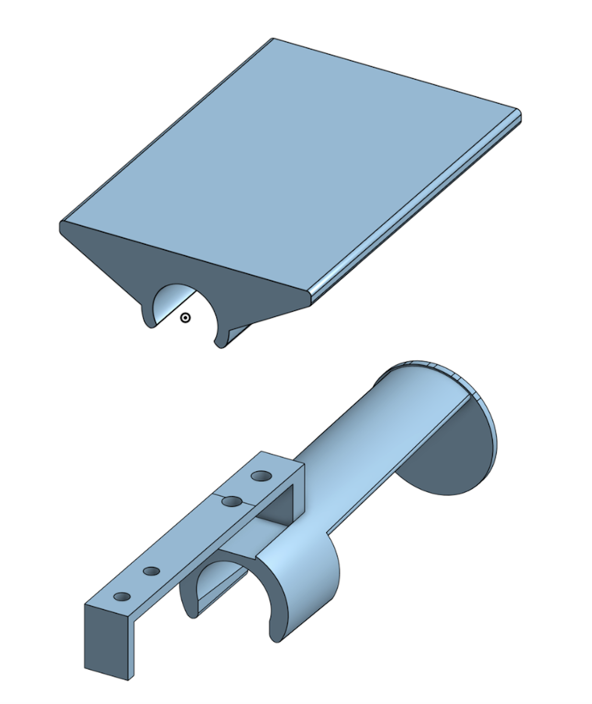
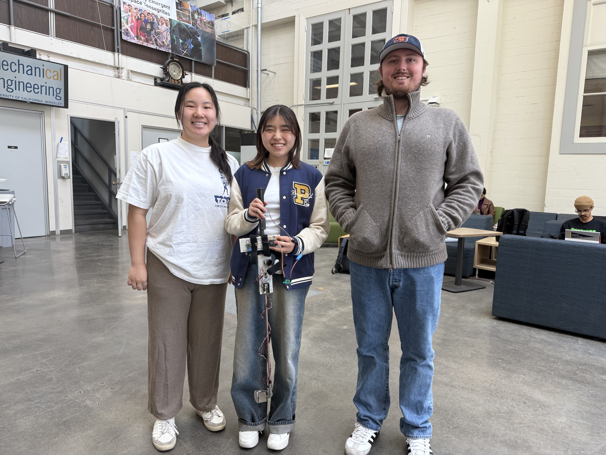

Smart Golf Club


What
- Develop a smart golf club with instantaneous haptic, visual, and auditory feedback to help amateur golfers improve swing technique
How?
- Integrated 4 sensors and 3 actuators for swing, grip, and tempo tracking
- CDesigned and 3D-printed custom mounts and clamps on the Markforged X7
- Programmed 3 ESP32 microcontrollers to set performance thresholds and transmit data wirelessly
Results
- Delivered real-time multi-sensory feedback to guide golfers toward proper grip, tempo, and clubface alignment
- Produced a functional prototype that demonstrates the potential of accessible, low-cost golf training technology